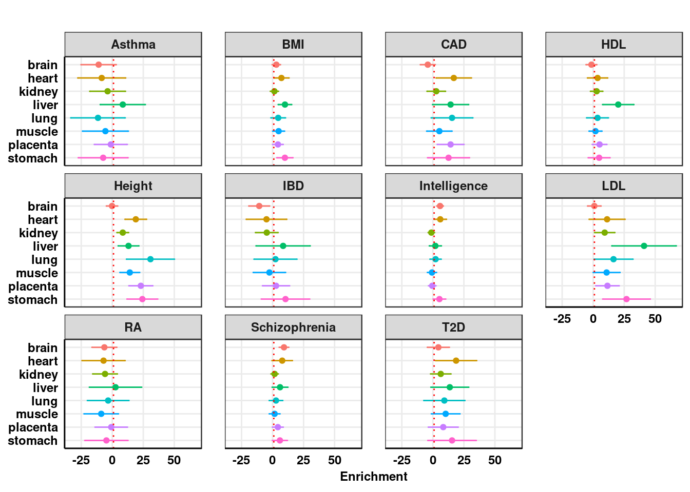

S-LDSC and Torus analysis to estimate the enrichment of GWAS variants in m6A peaks
Christie Du
2020-07-30
Last updated: 2020-07-30
Checks: 7 0
Knit directory: m6A_sldsc_torus_Xiao/
This reproducible R Markdown analysis was created with workflowr (version 1.6.2). The Checks tab describes the reproducibility checks that were applied when the results were created. The Past versions tab lists the development history.
Great! Since the R Markdown file has been committed to the Git repository, you know the exact version of the code that produced these results.
Great job! The global environment was empty. Objects defined in the global environment can affect the analysis in your R Markdown file in unknown ways. For reproduciblity it’s best to always run the code in an empty environment.
The command set.seed(20200730) was run prior to running the code in the R Markdown file. Setting a seed ensures that any results that rely on randomness, e.g. subsampling or permutations, are reproducible.
Great job! Recording the operating system, R version, and package versions is critical for reproducibility.
Nice! There were no cached chunks for this analysis, so you can be confident that you successfully produced the results during this run.
Great job! Using relative paths to the files within your workflowr project makes it easier to run your code on other machines.
Great! You are using Git for version control. Tracking code development and connecting the code version to the results is critical for reproducibility.
The results in this page were generated with repository version 7f04c62. See the Past versions tab to see a history of the changes made to the R Markdown and HTML files.
Note that you need to be careful to ensure that all relevant files for the analysis have been committed to Git prior to generating the results (you can use wflow_publish or wflow_git_commit). workflowr only checks the R Markdown file, but you know if there are other scripts or data files that it depends on. Below is the status of the Git repository when the results were generated:
Ignored files:
Ignored: .Rproj.user/
Note that any generated files, e.g. HTML, png, CSS, etc., are not included in this status report because it is ok for generated content to have uncommitted changes.
These are the previous versions of the repository in which changes were made to the R Markdown (analysis/sldsc_torus.Rmd) and HTML (docs/sldsc_torus.html) files. If you’ve configured a remote Git repository (see ?wflow_git_remote), click on the hyperlinks in the table below to view the files as they were in that past version.
| File | Version | Author | Date | Message |
|---|---|---|---|---|
| Rmd | 7f04c62 | cdu8 | 2020-07-30 | sldsc and torus analysis |
Introduction
I ran S-LDSC and Torus on m6A annotations of 8 tissues: brain, heart, kidney, liver, lung, muscle, placenta, and stomach. For S-LDSC, I used a subset of the baseline LD annotations located here: RCC:/project2/xinhe/kevinluo/ldsc/annot/ldscores/baseline_gene_MAF_LD/. I did this for 9 GWAS: BMI, CAD, HDL, Height, Intelligence, IBD, LDL, RA, and Schizophrenia. I also ran Torus for blood pressure GWAS: diastolic blood pressure (DBP), pulse pressure (DBP), and systolic blood pressure (SBP).
m6A annotations used are from this paper: Xiao et al. The RNA N6-methyladenosine modification landscape of human fetal tissues. Nature 2019.
S-LDSC
GWAS and m6A annotations:
- GWAS summary statistics in the sumstats format (excluding Intelligence) are located at
RCC:/project2/xinhe/kevinluo/GWAS/GWAS_summary_stats/GWAS_collection/ldsc_format - Intelligence GWAS in the sumstats format is located at
RCC:/project2/xinhe/kevinluo/GWAS/GWAS_summary_stats/GWAS_from_Min/ldsc_format - The original m6A annotations in BED format are located at
RCC:/project2/xinhe/cdu/ldsc/results/sLDSC_Xiao_m6A_2019/Annot/hg38/Bed
Because the GWAS summary statistics were based on the hg19 map, the m6A annotations were converted from hg38 to hg19 using liftOver.
annot_list <- c("brain", "heart", "kidney", "liver", "lung", "muscle", "placenta", "stomach")
trait_name_list <- c("BMI","CAD","HDL","Height","IBD","Intelligence","LDL","RA","Schizophrenia")library(ggplot2)
library(foreach)
library(doParallel)Loading required package: iteratorsLoading required package: parallelggplot_enrichment <- function(result_sLDSC, xlim = NULL, title = "Enrichment"){
Enrichment <- result_sLDSC$Enrichment
Enrichment_CI_L <- result_sLDSC$Enrichment - 1.96*result_sLDSC$Enrichment_std_error
Enrichment_CI_H <- result_sLDSC$Enrichment + 1.96*result_sLDSC$Enrichment_std_error
## truncate at 1
Enrichment[Enrichment < 1] <- 1
Enrichment_CI_L[Enrichment_CI_L < 1] <- 1
Enrichment_CI_H[Enrichment_CI_H < 1] <- 1
p <- ggplot(result_sLDSC, aes(x = Enrichment, y = Category, colour = Color))+
geom_point()+
xlab("Enrichment")+
ggtitle(title)+
geom_errorbarh(aes(xmin = Enrichment - 1.96*Enrichment_std_error,
xmax = Enrichment + 1.96*Enrichment_std_error, height = 0.1))+
facet_wrap(Disease~.,ncol = 4)+
theme_bw() +
geom_vline(xintercept = 1,linetype="dotted", colour = "red")+
theme(axis.ticks = element_blank(),
panel.grid.minor = element_blank(),
axis.line = element_line(colour = "black"),
axis.text = element_text(face="bold",size = 9, colour = "black"),
axis.title = element_text(face="bold",size = 9),
strip.text = element_text(face="bold",size = 9),
panel.spacing.x = unit(0.6,units = "cm"),
axis.title.y = element_blank(),
legend.position = "none",
plot.title = element_text(hjust = 0.5))
if(!is.null(xlim)){
p <- p + coord_cartesian(xlim = xlim)
}
print(p)
}
ggplot_log2_enrichment <- function(result_sLDSC, xlim = NULL, title = "Enrichment"){
result_sLDSC$Enrichment_CI_L <- result_sLDSC$Enrichment - 1.96*result_sLDSC$Enrichment_std_error
result_sLDSC$Enrichment_CI_H <- result_sLDSC$Enrichment + 1.96*result_sLDSC$Enrichment_std_error
## truncate at 1
result_sLDSC$Enrichment[result_sLDSC$Enrichment < 1] <- 1
result_sLDSC$Enrichment_CI_L[result_sLDSC$Enrichment_CI_L < 1] <- 1
result_sLDSC$Enrichment_CI_H[result_sLDSC$Enrichment_CI_H < 1] <- 1
p <- ggplot(result_sLDSC, aes(x = log2(Enrichment), y = Category, colour = Color))+
geom_point()+
xlab("log2(Enrichment)")+
ggtitle(title)+
geom_errorbarh(aes(xmin = log2(Enrichment_CI_L),
xmax = log2(Enrichment_CI_H), height = 0.1))+
facet_wrap(Disease~.,ncol = 4)+
theme_bw() +
geom_vline(xintercept = 0,linetype="dotted", colour = "red")+
theme(axis.ticks = element_blank(),
panel.grid.minor = element_blank(),
axis.line = element_line(colour = "black"),
axis.text = element_text(face="bold",size = 9, colour = "black"),
axis.title = element_text(face="bold",size = 9),
strip.text = element_text(face="bold",size = 9),
panel.spacing.x = unit(0.6,units = "cm"),
axis.title.y = element_blank(),
legend.position = "none",
plot.title = element_text(hjust = 0.5))
if(!is.null(xlim)){
p <- p + coord_cartesian(xlim = xlim)
}
print(p)
}
ggplot_heritability <- function(result_sLDSC, xlim = NULL, title = "Heritability"){
## Proportion of heritability
p <- ggplot(result_sLDSC, aes(x = Prop._h2*100, y = Category, colour = Color))+
geom_point()+
xlab("Heritability %")+
ggtitle(title)+
geom_errorbarh(aes(xmin = (Prop._h2-1.96*Prop._h2_std_error)*100,
xmax = (Prop._h2+1.96*Prop._h2_std_error)*100, height = 0.1))+
facet_wrap(Disease~.,ncol = 4)+
theme_bw() +
geom_vline(xintercept = 0,linetype="dotted", colour = "red")+
theme(axis.ticks = element_blank(),
panel.grid.minor = element_blank(),
axis.line = element_line(colour = "black"),
axis.text = element_text(face="bold",size = 12, colour = "black"),
axis.title = element_text(face="bold",size = 12),
strip.text = element_text(face="bold",size = 12),
panel.spacing.x = unit(0.6,units = "cm"),
axis.title.y = element_blank(),
legend.position = "none",
plot.title = element_text(hjust = 0.5))
if(!is.null(xlim)){
p <- p + coord_cartesian(xlim = xlim)
}
print(p)
}
## combine S-LDSC enrichment results across traits
combine_sldsc_traits <- function(trait_name_list, dir_results, baseline){
registerDoParallel(cores = 10)
result_sLDSC <- foreach(trait = trait_name_list, .combine = rbind)%dopar%{
sldsc_results <- read.table(paste0(dir_results,"/", trait, "/", baseline, "/", trait,"_", "brain", "_", baseline, ".results"), header = T, stringsAsFactors = F)
sldsc.brain <- sldsc_results[sldsc_results$Category == "L2_1",]
sldsc.brain$Category <- "brain"
sldsc_results <- read.table(paste0(dir_results,"/", trait, "/", baseline, "/", trait,"_", "heart", "_", baseline, ".results"), header = T, stringsAsFactors = F)
sldsc.heart <- sldsc_results[sldsc_results$Category == "L2_1",]
sldsc.heart$Category <- "heart"
sldsc_results <- read.table(paste0(dir_results,"/", trait, "/", baseline, "/", trait,"_", "kidney", "_", baseline, ".results"), header = T, stringsAsFactors = F)
sldsc.kidney <- sldsc_results[sldsc_results$Category == "L2_1",]
sldsc.kidney$Category <- "kidney"
sldsc_results <- read.table(paste0(dir_results,"/", trait, "/", baseline, "/", trait,"_", "liver", "_", baseline, ".results"), header = T, stringsAsFactors = F)
sldsc.liver <- sldsc_results[sldsc_results$Category == "L2_1",]
sldsc.liver$Category <- "liver"
sldsc_results <- read.table(paste0(dir_results,"/", trait, "/", baseline, "/", trait,"_", "lung", "_", baseline, ".results"), header = T, stringsAsFactors = F)
sldsc.lung <- sldsc_results[sldsc_results$Category == "L2_1",]
sldsc.lung$Category <- "lung"
sldsc_results <- read.table(paste0(dir_results,"/", trait, "/", baseline, "/", trait,"_", "muscle", "_", baseline, ".results"), header = T, stringsAsFactors = F)
sldsc.muscle <- sldsc_results[sldsc_results$Category == "L2_1",]
sldsc.muscle$Category <- "muscle"
sldsc_results <- read.table(paste0(dir_results,"/", trait, "/", baseline, "/", trait,"_", "placenta", "_", baseline, ".results"), header = T, stringsAsFactors = F)
sldsc.placenta <- sldsc_results[sldsc_results$Category == "L2_1",]
sldsc.placenta$Category <- "placenta"
sldsc_results <- read.table(paste0(dir_results,"/", trait, "/", baseline, "/", trait,"_", "stomach", "_", baseline, ".results"), header = T, stringsAsFactors = F)
sldsc.stomach <- sldsc_results[sldsc_results$Category == "L2_1",]
sldsc.stomach$Category <- "stomach"
sldsc.combined <- rbind(sldsc.brain, sldsc.heart, sldsc.kidney, sldsc.liver, sldsc.lung, sldsc.muscle, sldsc.placenta, sldsc.stomach)
sldsc.combined <- cbind(Disease = trait, sldsc.combined)
sldsc.combined
}
return(result_sLDSC)
}baseline <- "baseline_gene_MAF_LD"
dir_results <- "/project2/xinhe/cdu/ldsc/results/sLDSC_Xiao_m6A_2019/results_sLDSC_hg19"
result_sLDSC <- combine_sldsc_traits(trait_name_list, dir_results, baseline)
result_sLDSC$Category <- factor(result_sLDSC$Category, levels = rev(annot_list) )
result_sLDSC$Color <- factor(result_sLDSC$Category, levels = annot_list)DT::datatable(format(result_sLDSC[,1:8], digits = 2), options = list(scrollX = TRUE, keys = TRUE, pageLength = length(annot_list)),rownames = F)ggplot_enrichment(result_sLDSC, title = "")
ggplot_log2_enrichment(result_sLDSC, title = "")
Torus
GWAS and m6A annotations:
- BMI, HDL, Height, LDL, RA, and Schizophrenia GWAS are located at
RCC:/project2/xinhe/kevinluo/GWAS/GWAS_summary_stats/GWAS_collection/GWAS_raw - The Intelligence GWAS is located at
RCC:/project2/xinhe/kevinluo/GWAS/GWAS_summary_stats/GWAS_from_Min/raw_data - CAD, blood pressure, and IBD GWAS are located at
RCC:/project2/compbio/gwas_summary_statistics - The liftOver hg19 m6A annotations are located at
RCC:/project2/xinhe/cdu/torus/annot/Xiao/hg19 - GWAS data suitable for Torus can be found here
RCC:/project2/xinhe/cdu/GWAS/Xiao_torus_format
There are two BMI GWAS datasets: BMI_GWAS_fromScott.txt.gz and BMI_GWAS_raw. The BMI_GWAS_raw dataset was missing the chromosome and position data, so the missing SNP positions were taken from BMI_GWAS_fromScott.txt.gz. Of the 2554637 SNPs reported in BMI_GWAS_raw, 2092511 matched those in BMI_GWAS_fromScott.txt.gz.
annot_list <- c("brain", "heart", "kidney", "liver", "lung", "muscle", "placenta", "stomach")
trait_name_list <- c("BMI","CAD","HDL","HEIGHT","IBD","INTELLIGENCE","LDL","RA","SCZ","DBP","PP","SBP")library(ggplot2)
library(foreach)
library(doParallel)
ggplot_enrichment <- function(result_torus, xlim = NULL, title = "Enrichment"){
Enrichment <- result_torus$Enrichment
Enrichment_CI_L <- result_torus$Low
Enrichment_CI_H <- result_torus$High
p <- ggplot(result_torus, aes(x = Enrichment, y = Category, colour = Color))+
geom_point()+
xlab("Enrichment")+
ggtitle(title)+
geom_errorbarh(aes(xmin = Enrichment_CI_L,
xmax = Enrichment_CI_H, height = 0.1))+
facet_wrap(Disease~.,ncol = 4)+
theme_bw() +
geom_vline(xintercept = 1,linetype="dotted", colour = "red")+
theme(axis.ticks = element_blank(),
panel.grid.minor = element_blank(),
axis.line = element_line(colour = "black"),
axis.text = element_text(face="bold",size = 9, colour = "black"),
axis.title = element_text(face="bold",size = 9),
strip.text = element_text(face="bold",size = 9),
panel.spacing.x = unit(0.6,units = "cm"),
axis.title.y = element_blank(),
legend.position = "none",
plot.title = element_text(hjust = 0.5))
if(!is.null(xlim)){
p <- p + coord_cartesian(xlim = xlim)
}
print(p)
}
ggplot_log2_enrichment <- function(result_torus, xlim = NULL, title = "Enrichment"){
result_torus$Enrichment_CI_L <- result_torus$Low
result_torus$Enrichment_CI_H <- result_torus$High
## truncate at 1
result_torus$Enrichment[result_torus$Enrichment < 1] <- 1
result_torus$Enrichment_CI_L[result_torus$Enrichment_CI_L < 1] <- 1
result_torus$Enrichment_CI_H[result_torus$Enrichment_CI_H < 1] <- 1
p <- ggplot(result_torus, aes(x = log2(Enrichment), y = Category, colour = Color))+
geom_point()+
xlab("log2(Enrichment)")+
ggtitle(title)+
geom_errorbarh(aes(xmin = log2(Enrichment_CI_L),
xmax = log2(Enrichment_CI_H), height = 0.1))+
facet_wrap(Disease~.,ncol = 4)+
theme_bw() +
geom_vline(xintercept = 0,linetype="dotted", colour = "red")+
theme(axis.ticks = element_blank(),
panel.grid.minor = element_blank(),
axis.line = element_line(colour = "black"),
axis.text = element_text(face="bold",size = 9, colour = "black"),
axis.title = element_text(face="bold",size = 9),
strip.text = element_text(face="bold",size = 9),
panel.spacing.x = unit(0.6,units = "cm"),
axis.title.y = element_blank(),
legend.position = "none",
plot.title = element_text(hjust = 0.5))
if(!is.null(xlim)){
p <- p + coord_cartesian(xlim = xlim)
}
print(p)
}
## combine S-LDSC enrichment results across traits
combine_torus_traits <- function(trait_name_list, dir_results){
registerDoParallel(cores = 10)
result_torus <- foreach(trait = trait_name_list, .combine = rbind)%dopar%{
torus_results <- read.table(paste0(dir_results,"/", trait,".results"), header = T, stringsAsFactors = F)
torus_results$Disease = trait
torus_results
}
return(result_torus)
}
## change names for traits
change_annot_names <- function(annot_list){
annot_list <- gsub("^brain_hg19_mod.bed.1$","brain", annot_list)
annot_list <- gsub("^heart_hg19_mod.bed.1$","heart", annot_list)
annot_list <- gsub("^kidney_hg19_mod.bed.1$","kidney", annot_list)
annot_list <- gsub("^liver_hg19_mod.bed.1$","liver", annot_list)
annot_list <- gsub("^lung_hg19_mod.bed.1$","lung", annot_list)
annot_list <- gsub("^muscle_hg19_mod.bed.1$","muscle", annot_list)
annot_list <- gsub("^placenta_hg19_mod.bed.1$","placenta", annot_list)
annot_list <- gsub("^stomach_hg19_mod.bed.1$","stomach", annot_list)
return(annot_list)
}dir_results <- "/project2/xinhe/cdu/torus/results"
result_torus <- combine_torus_traits(trait_name_list, dir_results)
result_torus$term <- change_annot_names(result_torus$term)
names(result_torus)[names(result_torus) == "term"] <- "Category"
names(result_torus)[names(result_torus) == "estimate"] <- "Enrichment"
names(result_torus)[names(result_torus) == "low"] <- "Low"
names(result_torus)[names(result_torus) == "high"] <- "High"
result_torus <- result_torus[!(result_torus$Category=="Intercept"),]
result_torus <- result_torus[,c(5,1,2,3,4)]
result_torus$Category <- factor(result_torus$Category, levels = rev(annot_list) )
result_torus$Color <- factor(result_torus$Category, levels = annot_list)DT::datatable(format(result_torus[,1:5], digits = 2),
class = 'cell-border stripe',
style = 'bootstrap',
options = list(scrollX = TRUE, keys = TRUE, pageLength = length(annot_list)),
rownames = F)ggplot_enrichment(result_torus, title = "")
ggplot_log2_enrichment(result_torus, title = "")
sessionInfo()R version 3.5.1 (2018-07-02)
Platform: x86_64-pc-linux-gnu (64-bit)
Running under: Scientific Linux 7.4 (Nitrogen)
Matrix products: default
BLAS/LAPACK: /software/openblas-0.2.19-el7-x86_64/lib/libopenblas_haswellp-r0.2.19.so
locale:
[1] LC_CTYPE=en_US.UTF-8 LC_NUMERIC=C
[3] LC_TIME=en_US.UTF-8 LC_COLLATE=en_US.UTF-8
[5] LC_MONETARY=en_US.UTF-8 LC_MESSAGES=en_US.UTF-8
[7] LC_PAPER=en_US.UTF-8 LC_NAME=C
[9] LC_ADDRESS=C LC_TELEPHONE=C
[11] LC_MEASUREMENT=en_US.UTF-8 LC_IDENTIFICATION=C
attached base packages:
[1] parallel stats graphics grDevices utils datasets methods
[8] base
other attached packages:
[1] doParallel_1.0.14 iterators_1.0.10 foreach_1.4.4 ggplot2_3.1.1
loaded via a namespace (and not attached):
[1] Rcpp_1.0.4.6 compiler_3.5.1 pillar_1.3.1 later_0.7.5
[5] git2r_0.26.1 plyr_1.8.4 workflowr_1.6.2 tools_3.5.1
[9] digest_0.6.18 jsonlite_1.7.0 evaluate_0.12 tibble_2.1.1
[13] gtable_0.2.0 pkgconfig_2.0.2 rlang_0.4.7 shiny_1.2.0
[17] crosstalk_1.0.0 yaml_2.2.0 withr_2.1.2 stringr_1.3.1
[21] dplyr_0.8.0.1 knitr_1.20 htmlwidgets_1.3 fs_1.3.1
[25] DT_0.5 rprojroot_1.3-2 grid_3.5.1 tidyselect_0.2.5
[29] glue_1.3.0 R6_2.3.0 rmarkdown_1.10 purrr_0.3.2
[33] magrittr_1.5 whisker_0.3-2 codetools_0.2-15 backports_1.1.2
[37] scales_1.0.0 promises_1.0.1 htmltools_0.3.6 assertthat_0.2.0
[41] xtable_1.8-3 mime_0.6 colorspace_1.3-2 httpuv_1.4.5
[45] labeling_0.3 stringi_1.2.4 lazyeval_0.2.1 munsell_0.5.0
[49] crayon_1.3.4